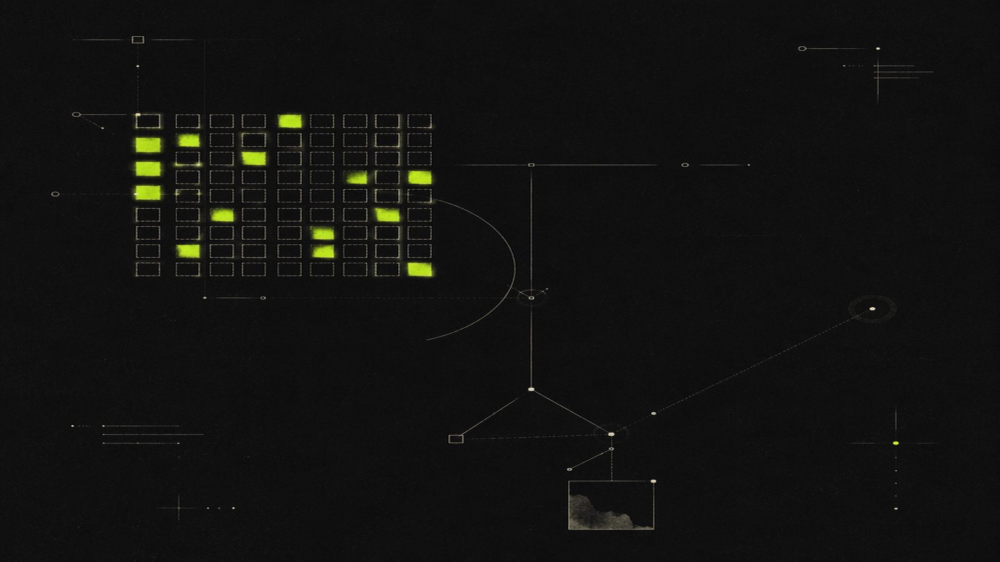
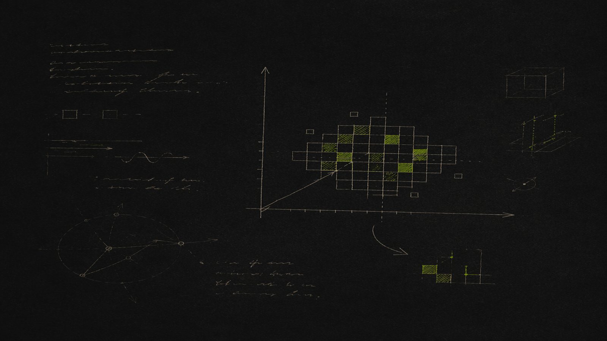
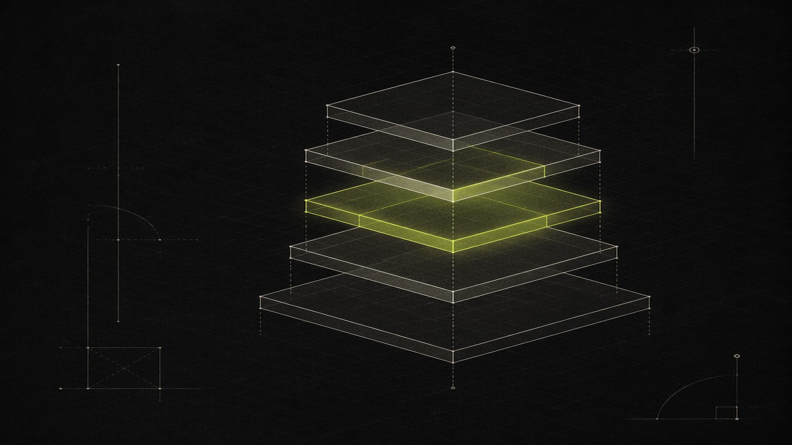
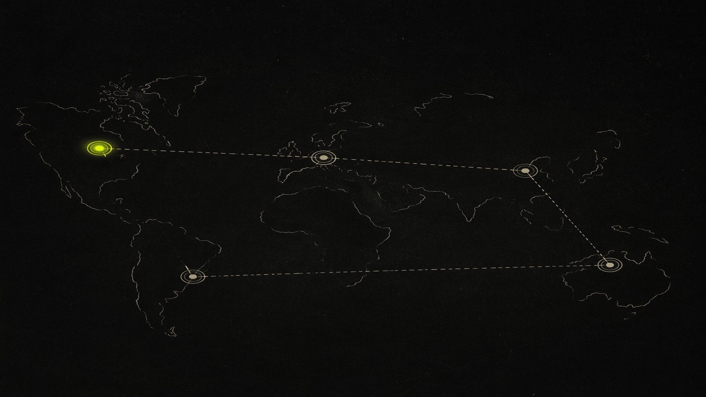
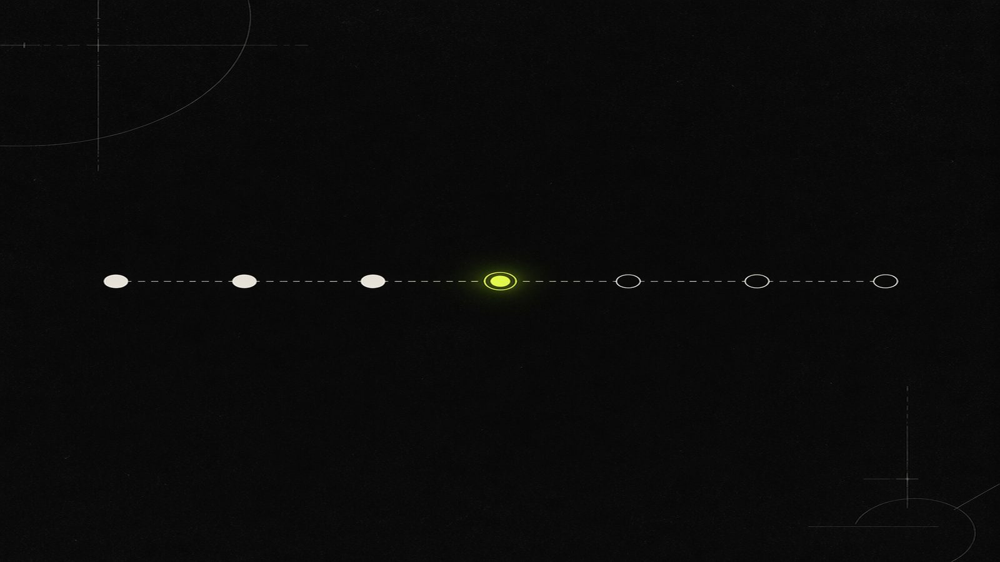
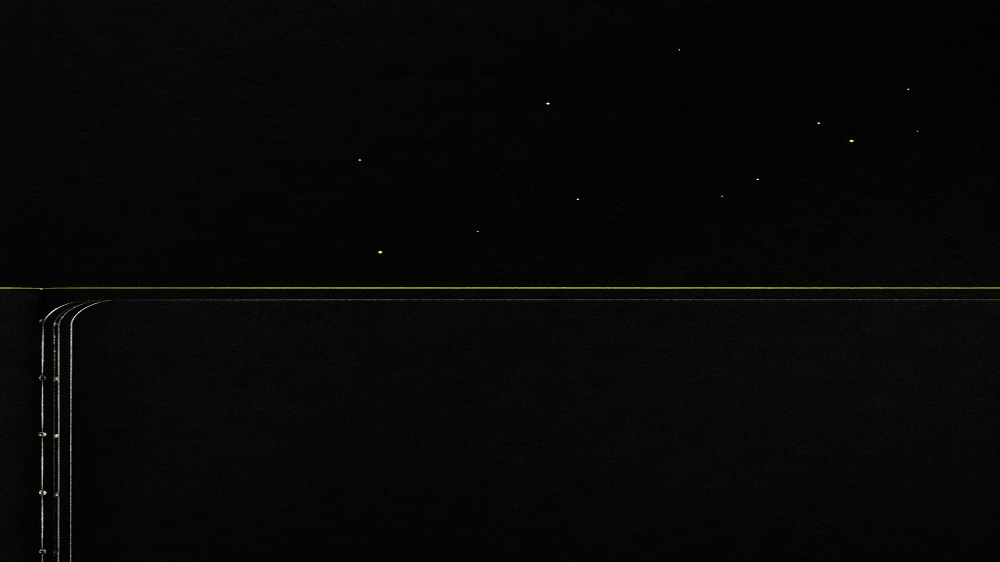

수동 채점 병목
능력 축의 30%(C2·C5·C10)는 전문가 평가 필요. 3명 팀으로 5×80 평가는 불가능.

DOSSIER №002 WEEK 2 REPORT
SNU WE-Meet × SoonsoonFactory
송용성 · 김태운 · 김호윤 2025 · SEOUL
§01 · RECAP
조사하다
만들고 돌리다
설계하다
"손으로 SAM을 써봐야 다음 단계가 현실적이 된다."
§03 · Achievement
11
목표 3~5개의 두 배 이상.
Java Min-Heap (제약 준수)
Verilog 래치 디버깅
Cache 시뮬레이터
Builder 패턴 분석
소크라테스식 프롬프트
SVD 데이터 압축
기저 · 차원 정의
스레드 힙 함정
코드 리뷰 멘토링
가짜 논문 환각
Spring 레거시
함정·유도 유형
기존 벤치마크에 없는 차별점
§04 · Achievement
재료공학 + 한국어 추론(꼬들) 문제 진행 중

§05 · Discovery
25% 채워진 매트릭스 — 학생들이 직접 채워나간다.
D9 (언어/다국어) — AI가 인간을 압도하는 영역. 가성비 기준선.
40% 자동 채점 가능 (라임 표시)

§08 · Z-Axis
학생이 직접 만들고 돌려보면서
난이도를 채워나간다.
대학 수준(L2~L3)을 100점 기준 — 같은 X×Y 좌표에서 난이도만 조절.

§09 · Alignment
5개국이 공통으로 강조 — 비판적 사고, 학생 주도성, AI를 도구로.
§10 · Self-Critique
6.25
"방향은 맞지만 실행 디테일 보강 필요."
능력 축의 30%(C2·C5·C10)는 전문가 평가 필요. 3명 팀으로 5×80 평가는 불가능.
모든 도메인 동일 가중치. 도메인별 분리 + 검증 비용 개념 빠짐.
L0~L4 선형 가정. L1↔L3 점수 차이 실제 검증 안 됨.

§13 · Next

DOSSIER №002 END
다음 주, 우리는 돌아가는 벤치마크를 본다.
wemeet-uni-bench / v0.1 2025 · SEOUL